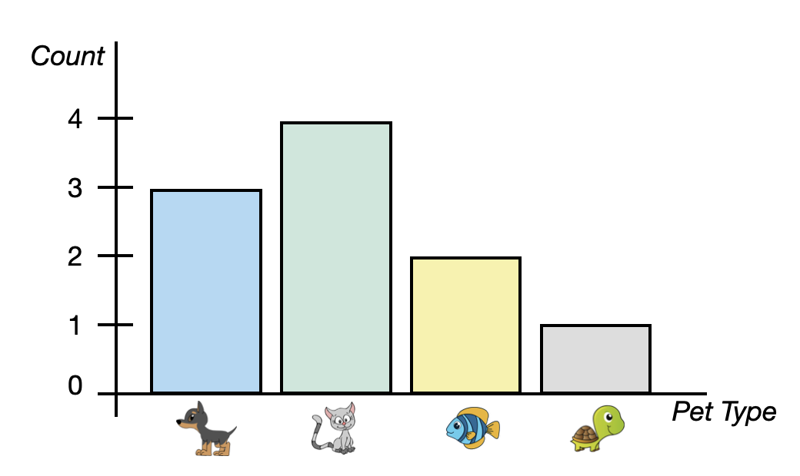
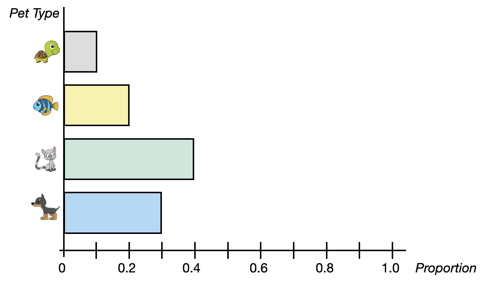
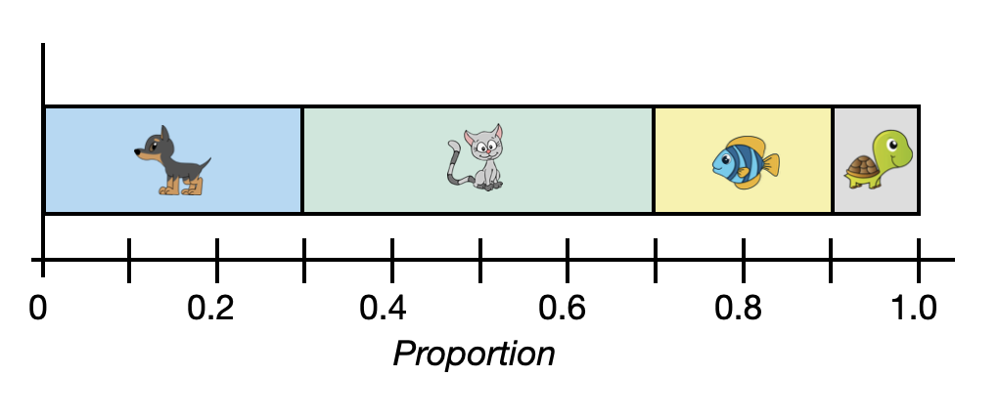
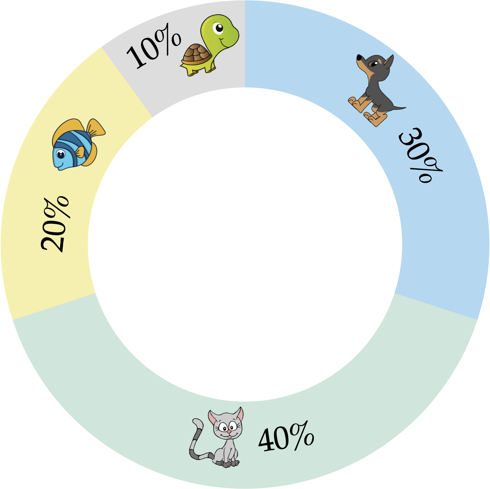
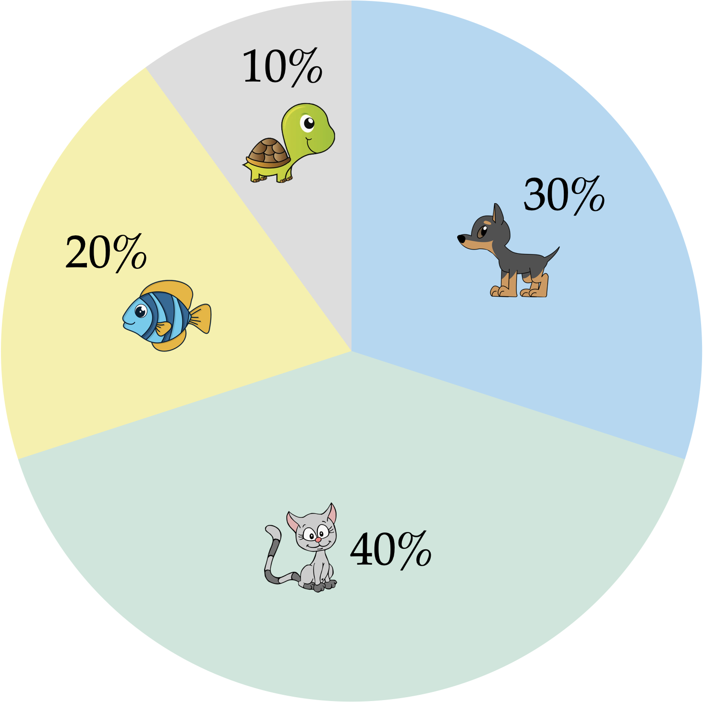
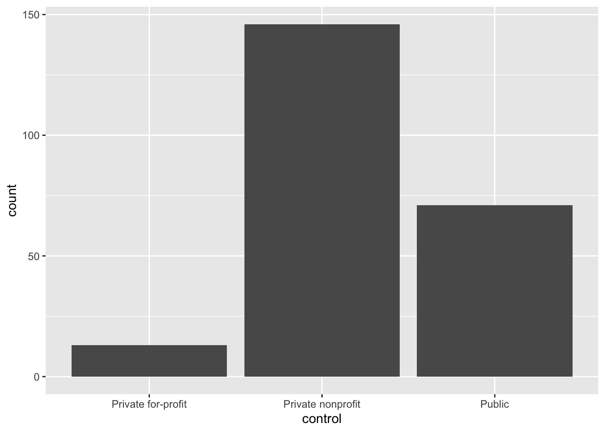
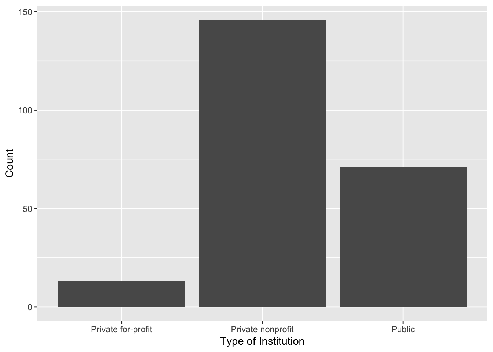
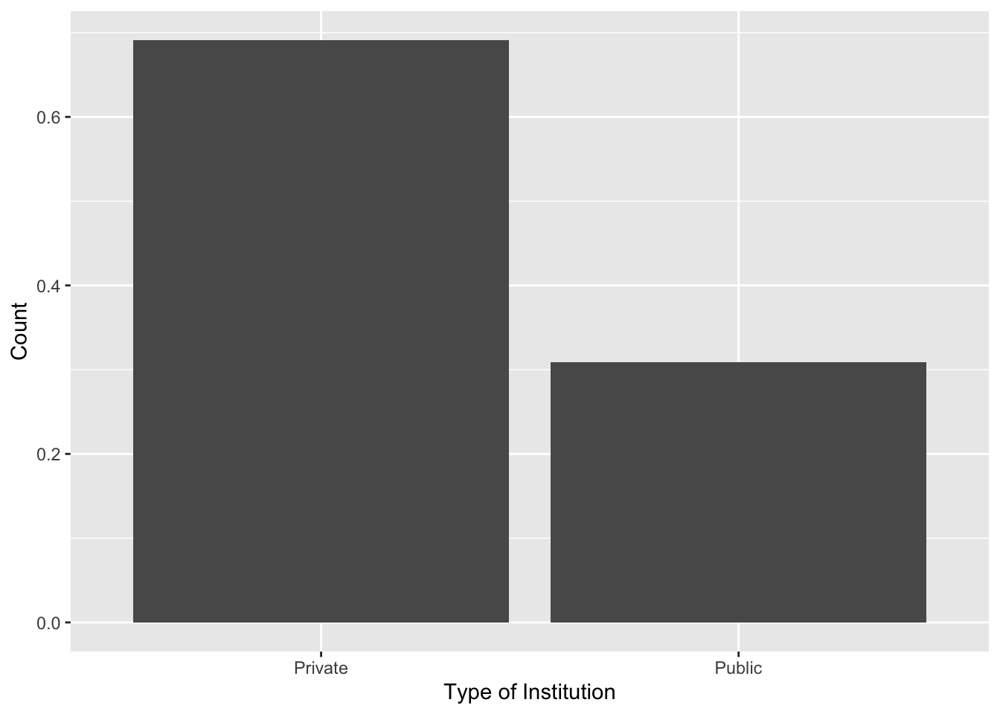
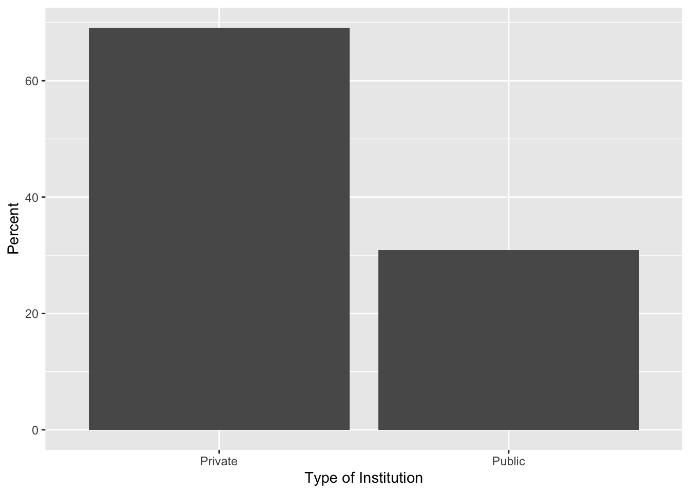
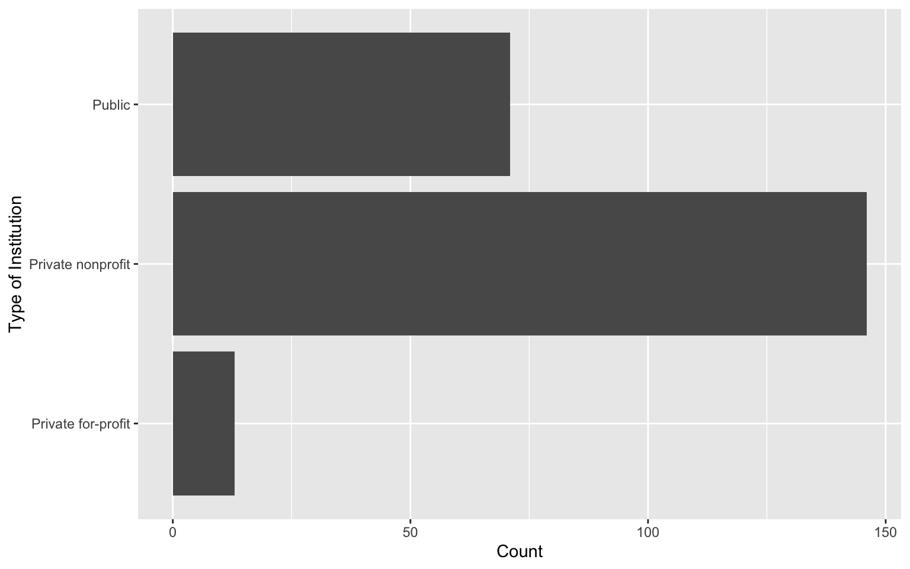

5 Summarizing and Visualizing Categorical Attributes
This chapter will focus on the visualization and numerical summarization of categorical attributes.
5.1 Hypothetical Example: Pet Ownership
Imagine you have surveyed 10 pet owners about the type of pet they own.1 The data you collected is shown in Figure 5.1.
Our goal in exploratory analysis is to describe the data. One way of describing the data is to list all of the values. For example here we could say the sample included a turtle, a fish, a cat, a dog, another dog, another fish, another cat, another cat, another cat, and another dog. While this is an accurate description, it isn’t very generalizable. (Imagine trying to describe the data from 1000 pet owners or 10,000 pet owners!)
5.1.1 Numerically Summarizing Categorical Attributes
A more natural way to describe these data is to summarize them by providing counts of each pet type. For example, describing our sample data using counts:
- 1 of the pet owners sampled owned a turtle,
- 2 of the pet pet owners sampled owned a fish,
- 3 of the pet pet owners sampled owned a dog, and
- 4 of the pet pet owners sampled owned a cat.
Summarizing each type of pet owned by reporting counts of them is a much more natural way of describing the data. (This is also useful when the sample size is much larger.)
Another summary that could be used to describe this sample is to give the proportion of each type of pet owned. To compute the proportion, we take the count of each type of pet owned, and divide it by the total sample size.
\[ \mathrm{Proportion} = \frac{\mathrm{Count~of~Pet~Type}}{\mathrm{Total~Sample~Size}} \]
For example, to compute the proportion of pet owners in our sample that owned a dog, we use:
\[ \mathrm{Proportion~of~Dogs} = \frac{3}{10} = 0.30 \]
FYI
Proportions will always be between 0 and 1. If you add all of the proportions of each category together you will get 1, so long as values can only belong to one category.
Describing our sample data using proportions:
- 0.10 of the pet owners sampled owned a turtle,
- 0.20 of the pet pet owners sampled owned a fish,
- 0.30 of the pet pet owners sampled owned a dog, and
- 0.40 of the pet pet owners sampled owned a cat.
The count and proportion values are often reported in a table, especially if there are more than a couple values in the categorical attribute. Table 5.1 is an example table indicating the counts and proportions of values in our hypothetical pet example.
| Pet | Count | Proportion |
|---|---|---|


5.1.2 Visualizing Categorical Attributes
To visualize categorical attributes we typically use a bar chart. Figure 5.2 shows a bar chart of the pet data.

A bar chart (also known as a bar graph) shows a bar for each category of the categorical attribute. In our example, we have four bars, one for each pet type. The height of the bar indicates the count of each category. For example, the bar for cats has a height of four on the y-axis.
Sometimes the axes in the bar chart are transposed; categories are placed on the y-axis and counts on the x axis. Also, you might see a bar chart indicating proportions rather than counts. Figure 5.3 shows a transposed bar chart indicating the proportion of each pet type.

PROTIP
When proportions are used in a bar chart, it is conventional to extend that axis from 0 to 1 (the range of potential proportions).
5.1.2.1 Bar Chart Variations
There are several variations on the bar chart that you may see in practice. For example, the segmented bar chart is a variation of the bar chart. This variation of the plot, which always uses proportions rather than counts, has a single bar that is split into segments—one for each category. A segmented bar chart summarizing the pet data is shown in Figure 5.4.

Another variation of the bar chart is the donut chart. A donut chart is simply a segmented bar chart that is presented in a circular layout. Figure 5.5 presents a donut chart summarizing the pet data. Because there is no axis to indicate the proportion of each category in a donut chart, it is conventional to indicate the percentages of each category in the plot. Here percentages are used rather than proportions.

5.1.2.2 Pie Charts
One last plot used to visualize summaries of categorical dat is the pie chart. Figure 5.6 shows a pie chart summarizing the pet data. Unlike any of the bar charts that we have looked at, a pie chart uses the proportional area of a circle to indicate the proportion or percentage of each pet type rather than the length of a bar.

FYI
In a pie chart, each section of the pie is determined by proportionally dividing the 360° of the circle based on the data, and then making each section have the computed angle. For example the proportion of pet owners who have a cat is 0.4, and 0.4 of 360° is 144°—so the cats section has an angle of 144°. While these computations and the drawing of the pie chart would be done by the computer, it has implications for interpretations. Namely, research has suggested that humans may not be as adept at making accurate comparisons involving angles and the areas of sections based on those angles. Because of this, the recommendation from the data visualization community is to use bar charts rather than pie charts when displaying summaries of categorical data.
5.2 Using R to Numerically Summarize Categorical Attributes
To illustrate how we can summarize and visualize categorical attributes using R, we will use the college-scorecard.csv data. As a reminder, we will start by loading three libraries: {tidyverse}, {ggformula}, and {mosaicCore}. Then we will import the college scorecard data using the read_csv() function and assign the data into an object called colleges. Finally, we view the data to make sure it read in properly.
# Load libraries
library(tidyverse)
library(ggformula)
library(mosaicCore)
# Import data
colleges <- read_csv("https://raw.githubusercontent.com/zief0002/epsy-5261/main/data/college-scorecard.csv")
# View data
colleges# A tibble: 230 × 10
name state region inst_type control for_profit adm_rate undergrads mdn_debt
<chr> <chr> <chr> <chr> <chr> <chr> <dbl> <dbl> <dbl>
1 Abile… TX South… Four-yea… Private No 0.634 3480 24000
2 Abrah… GA South… Four-yea… Public No 0.760 3546 17500
3 Adven… FL South… Four-yea… Private No 0.909 1129 25034
4 Andre… MI Great… Four-yea… Private No 0.488 1381 26076
5 Arizo… AZ South… Four-yea… Private No 0.715 883 21500
6 Art C… CA Far W… Four-yea… Private No 0.761 1907 31218
7 Augsb… MN Plains Four-yea… Private No 0.731 2487 25000
8 Ave M… FL South… Four-yea… Private No 0.918 1048 21500
9 Ball … IN Great… Four-yea… Public No 0.870 15171 23250
10 Bapti… AR South… Two-year… Private No 0.5 661 10000
# ℹ 220 more rows
# ℹ 1 more variable: mdn_earn <dbl>Recall that in these data each case in these data is an institution of higher education and there are 234 institutions in our sample. This dataset has several categorical attributes, including: state, region, type of institution, and control.
The first attribute we will summarize and visualize is the control variable. Looking at the data codebook we find that this attribute can take on three different values: Public, Private nonprofit, and Private for-profit. Our first task is to get institution counts for each category of control. To do this, we will use the df_stats() function. The general syntax to obtain these counts is shown below.
# General syntax to counts the categories in a categorical attribute
df_stats( ~ attribute_name, data = data_name, counts)We first need to identify the name of the categorical attribute. To tell df_stats() that this is an attribute, we place a tilde (~) in front of the attribute name. Then we use the data= argument to identify the data object that includes our categorical attribute. Finally, we use counts to indicate that we want to compute the category counts.
PROTIP
It is a good idea to learn how to read R syntax. The tilde operator indicates a special kind of expression called a formula, and can be read as “model”. So the general syntax above is read as, “model the attribute_name found in the data_name data by counting the categories in the attribute”.
Putting this into practice to count the categories in the control attribute which is in our colleges data:
# Syntax to count the categories in the control attribute
df_stats(~control, data = colleges, counts) response n_Private n_Public
1 control 159 71If we were to read this syntax, “model the control attribute found in the colleges data by counting the categories in the attribute”.
Based on the counts, we find that most of the institutions of higher learning in our sample are private nonprofit institutions (n = 146). There are also several public institutions of higher learning in our sample (n = 71). Lastly, there are also a few private for-profit institutions of higher learning in our sample (n = 13).
NOTATION
It is common to use n or N to denote sample size. Some textbooks and authors will use N to indicate the overall sample size (e.g., in the college scorecard data, N = 234) and n to indicate the sample size of subgroups within the sample (e.g., n = 71 for public institutions). Other authors might use n to define the overall sample size (e.g., n = 234) and then use subscripts on n to denote the sample size of different groups (e.g., \(n_{\mathrm{Public}}=71\)). There is not a single unified agreed upon way to denote these things.
We also might want to compute the proportions for each category of control. To do this, we can again use the function df_stats(), but instead of providing counts we will provide props.
# Syntax to compute the proportion for each category in the control attribute
df_stats(~control, data = colleges, props) response prop_Private prop_Public
1 control 0.6913043 0.3086957These proportions (which can also be turned into percentages2) tell a similar story to what the counts did. Most of the institutions in our sample are private nonprofit (63.5%) and public (30.9%) institutions. There is a smaller percentage of institutions that are private for-profit (5.7%).3 As we did with the numerical summaries of the pet data, we can include these values in a table.
| Control | Count | Proportion |
|---|---|---|
5.3 Creating a Bar Chart to Summarize Counts using R
To create a bar chart, we will use the gf_counts() function. This general syntax for gf_counts() is
# General syntax to create a bar chart
gf_counts(~ attribute_name, data = data_name)In this function we indicate the name of the attribute we want to create a bar chart for with a tilde (~) precedeing the attribute name. We also give the name of the data object in the data= argument. For example, the syntax to create a bar chart summarizing the counts of the control attribute is:
# Syntax to create a bar chart for the control attribute
gf_counts(~ control, data = colleges)
READING THE SYNTAX
Create a bar chart by modeling the counts of the control attribute in the colleges data object.
We can make this plot nicer by changing the axes labels. For example, we might change the y-axis label to “Count” and the x-axis label to “Type of Institution”. To do this we include the xlab= and ylab= arguments in the gf_counts() function. The labels we want depicted are given as text inside of quotation marks. Remember that each argument needs to be separated by a comma!
PROTIP
As you include additional arguments in the function, it can be useful to include each argument on different lines. This will help you troubleshoot syntax that doesn’t work.
# Syntax to create a bar chart for the control attribute
gf_counts(
~ control, data = colleges,
xlab = "Type of Institution",
ylab = "Count"
)
5.4 Creating a Bar Chart to Summarize Proportions using R
To create a bar chart that summarizes the proportion of each category (rather than counts) we can use the gf_props() function. The syntax for this function is identical to that of gf_counts(). The syntax to create a bar chart summarizing the proportion of the control attribute is:
# Syntax to create a bar chart for the control attribute
gf_props(
~control, data = colleges,
xlab = "Type of Institution",
ylab = "Count"
)
You can also create a bar chart that summarizes the percentage of each category using the gf_percents() function.
# Syntax to create a bar chart for the control attribute
gf_percents(
~control, data = colleges,
xlab = "Type of Institution",
ylab = "Percent"
)
5.5 Creating Horizontal Bar Charts Using R
To create horizontal bar charts we can use add on (literally) the function coord_flip() , to gf_counts(), gf_props() or gf_percents(). For example, to create a horizontal bar chart summarizing the counts of each type of institution we can use the following syntax:
# Syntax to create a hirizontal bar chart for the control attribute
gf_counts(
~control, data = colleges,
xlab = "Count",
ylab = "Type of Institution"
) +
coord_flip()
5.6 Summary
There are several R functions that are useful for summarizing categorical attributes. Table 6.1 shows the functions (and their descriptions) you will use to summarize and visualize categorical attributes. Note that they all have very parallel syntax.
| Function | Description |
|---|---|
| Summarize | |
| Visualize | |
Lastly, there are several optional arguments you can include in the visualization (gf_) functions to improve the aesthetic quality of your plot. Some of these are listed in Table 5.4.
gf_) functions.
| Argument |
|---|
| Labels |
| Color |
Remember to separate each argument with a comma if you include multiple arguments in the function.
Exercises: Your Turn
- Write the syntax to compute the counts of the
regionattribute.
- Write the syntax to compute the proportions of the
regionattribute.
- Write the syntax to create a bar chart that summarizes the counts of the
regionattribute.
- Add better labels to the x- and y-axis of the bar chart you just created.
- Write the syntax to create a bar chart that summarizes the proportions of the
regionattribute. Also change the axis labels on both the x- and y-axes.
- Write the syntax to create a horizontal bar chart that summarizes the percent of the
regionattribute. Also change the axis labels on both the x- and y-axes.